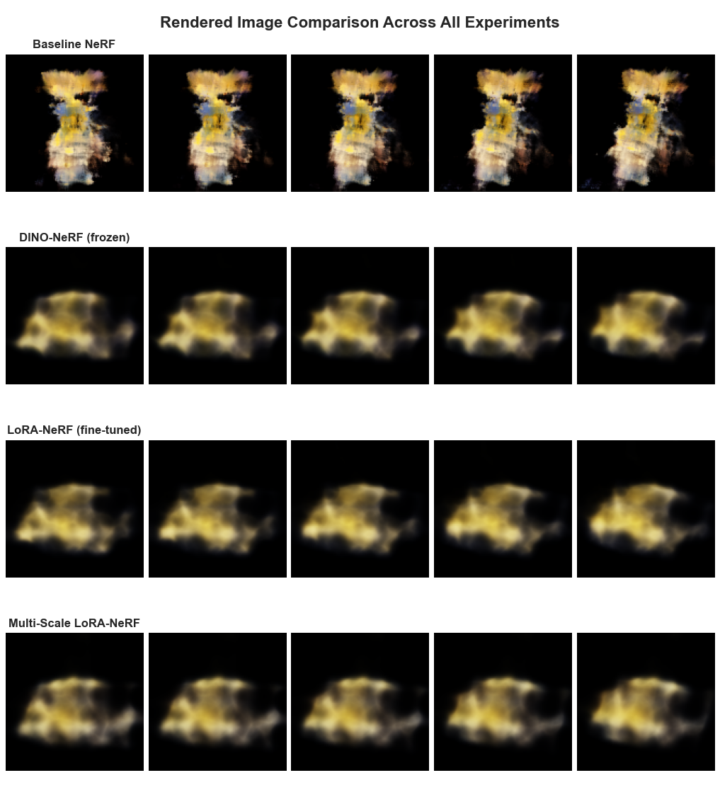

← Back
Limitations of NeRF with Pre-trained Vision Features for Few-Shot 3D Reconstruction
Ankit Sanjyal
arXiv preprint arXiv:2506.18208 · cs.CV · June 2025
Neural Radiance Fields
DINO
Few-Shot 3D Reconstruction
LoRA
Negative Results

Abstract. Neural Radiance Fields (NeRF) have revolutionized 3D scene reconstruction from
sparse image collections. Recent work has explored integrating pre-trained vision features, particularly
from DINO, to enhance few-shot reconstruction capabilities. However, the effectiveness of such approaches
remains unclear, especially in extreme few-shot scenarios. We present a systematic evaluation of
DINO-enhanced NeRF models, comparing baseline NeRF, frozen DINO features, LoRA fine-tuned features, and
multi-scale feature fusion. Surprisingly, all DINO variants perform worse than the baseline NeRF,
achieving PSNR values around 12.9–13.0 compared to the baseline's 14.71. This counterintuitive result
suggests that pre-trained vision features may not be beneficial for few-shot 3D reconstruction and may
even introduce harmful biases.
⚠️ Key Finding: This is a negative result paper: and that's the point.
Pre-trained DINO features, widely believed to improve few-shot NeRF, consistently hurt performance.
This challenges a common assumption in the field.
Background
NeRF learns a continuous volumetric representation of a scene from posed images, enabling novel view synthesis.
In the few-shot regime (3–10 views), NeRF suffers from underdetermination: there are not enough
observations to constrain the MLP. A natural idea is to condition NeRF on rich semantic features from
foundation models like DINO (a self-supervised ViT), which can provide scene priors.
This paper asks: does DINO actually help when views are extremely scarce?
Models Evaluated
- Baseline NeRF: standard MLP + positional encoding + volume rendering, no external features
- DINO-NeRF (frozen): DINO patch features concatenated to NeRF input, weights frozen
- LoRA-NeRF: DINO features with Low-Rank Adaptation (LoRA) fine-tuning on few-shot views
- Multi-Scale LoRA-NeRF: multi-scale DINO feature pyramid fused with LoRA adaptation
Results
| Model |
PSNR ↑ |
SSIM ↑ |
LPIPS ↓ |
| Baseline NeRF |
14.71 |
0.46 |
0.53 |
| DINO-NeRF (frozen) |
12.99 (−1.72) |
0.46 |
0.54 |
| LoRA-NeRF (fine-tuned) |
12.97 (−1.74) |
0.45 |
0.54 |
| Multi-Scale LoRA-NeRF |
12.94 (−1.77) |
0.44 |
0.54 |
Evaluated on the Blender Lego scene with extreme few-shot setup. Green = best. Red = worse than baseline.
Why Does DINO Hurt?
We hypothesize several causes for the degradation:
- Domain mismatch: DINO is trained on natural images; few-shot NeRF targets (e.g., Blender synthetic objects) have very different appearance statistics.
- Feature rigidity: Frozen DINO features encode ImageNet-level semantics, not the fine-grained 3D geometry NeRF needs to infer.
- Overfitting under LoRA: With only a handful of views, LoRA fine-tuning may overfit DINO features to specific view directions, harming generalization.
- Feature-geometry conflict: DINO features are 2D patch-level; conditioning a 3D volumetric MLP on them introduces an inductive bias mismatch.
Implications
Simpler, geometry-focused architectures may be more effective than feature-rich models for extreme few-shot 3D
reconstruction. Future work should focus on geometric consistency losses, depth priors, and
view-consistent regularization rather than semantic feature injection.
Why Publish a Negative Result?
Interpretability research, like all good empirical science, depends on people being honest about what
doesn't work. A common failure mode in ML is to only publish positive results, leaving the community with
a falsely optimistic picture of what techniques are reliable. This paper is a deliberate counterexample:
DINO features are widely assumed to help few-shot NeRF, and this study shows systematically that they
don't. Publishing it is a commitment to the same epistemic standard that AI safety research requires:
report what you actually found, not what you hoped to find.
Citation
@article{sanjyal2024nerflimitations,
title = {Limitations of {NeRF} with Pre-trained Vision Features for Few-Shot 3D Reconstruction},
author = {Sanjyal, Ankit},
journal = {arXiv preprint arXiv:2506.18208},
year = {2025}
}